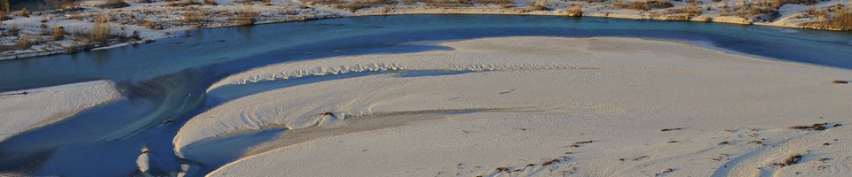
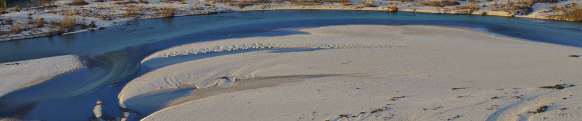
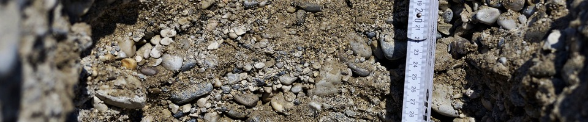
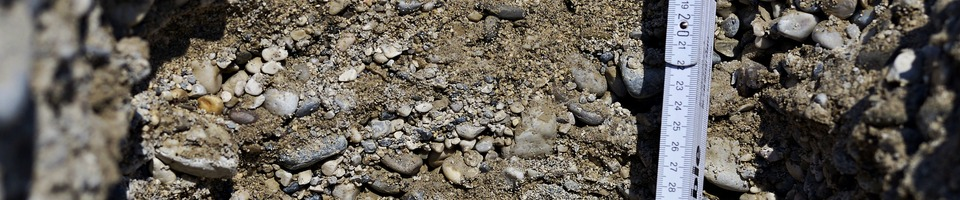

 



Education
Postdoctoral fellow in Geosciences
2017-06 to 2017-12
‘Quantifying scour depth in a straightened gravel-bed river with ground-penetrating radar’
Supervision by Prof. Dr. P. Huggenberger
Postdoctoral fellow in Geological Sciences
2015-10 to 2017-03
‘Uncertainty quantification in subsurface flow problems: development of a Bayesian framework considering uncertain data and hydraulic boundary conditions’
Supervision by Prof. Dr. J. Caers
PhD in Geosciences
2011-03 to 2015-06
‘Incorporating sedimentological observations, hydrogeophysics and conceptual knowledge to constrain 3D numerical heterogeneity models of alluvial systems’
Supervision by Prof. Dr. P. Huggenberger
Master of Science in Environmental Engineering
2007-09 to 2009-09
Specialities: urban water management & water resources management
Master thesis: representativity of groundwater monitoring (supervision by Prof. Dr. F. Stauffer and Dr. H.-J. Hendricks Franssen)
Erasmus exchange year
2006-10 to 2007-08
Bachelor of Science in Environmental Sciences and Engineering
2004-09 to 2007-08